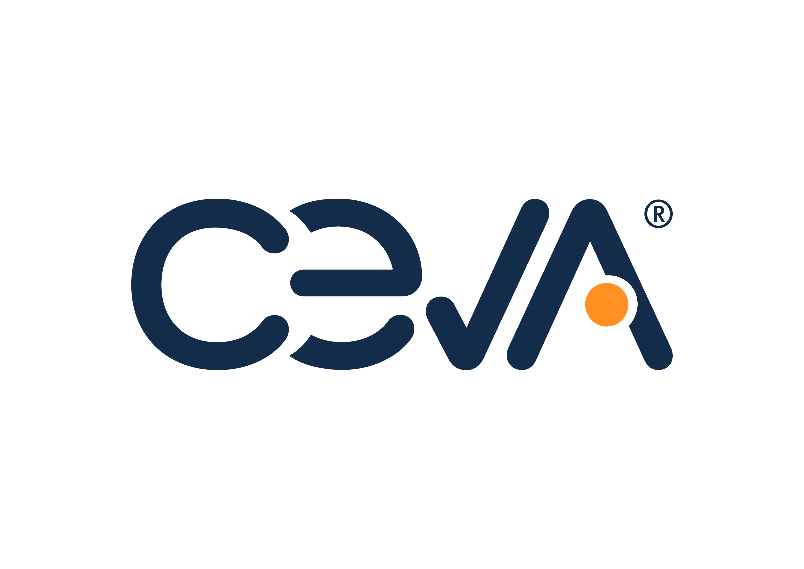

DPDFNet: Boosting DeepFilterNet2 via Dual-Path RNN
AI Division, Ceva Technologies
AI Division, Ceva Technologies
DPDFNet is a causal, streaming speech enhancer that adds dual‑path RNN blocks to DeepFilterNet2’s encoder to improve cross‑band and temporal modeling for robust real‑time noise suppression.
We present DPDFNet, a causal single-channel speech enhancement model that extends DeepFilterNet2 architecture with dual-path blocks in the encoder, strengthening long-range temporal and cross-band modeling while preserving the original enhancement framework. In addition, we demonstrate that adding a loss component to mitigate over-attenuation in the enhanced speech, combined with a fine-tuning phase tailored for “always-on” applications, leads to substantial improvements in overall model performance. To compare our proposed architecture with a variety of causal open-source models, we created a new evaluation set comprising long, low-SNR recordings in 12 languages across everyday noise scenarios, better reflecting real-world conditions than commonly used benchmarks. On this evaluation set, DPDFNet delivers superior performance to other causal open-source models, including some that are substantially larger and more computationally demanding. We also propose an holistic metric named PRISM, a composite, scale-normalized aggregate of intrusive and non-intrusive metrics, which demonstrates clear scalability with the number of dual-path blocks. We further demonstrate on-device feasibility by deploying DPDFNet on Ceva-NeuPro™-Nano edge NPUs. Results indicate that DPDFNet-4, our second-largest model, achieves real-time performance on NPN32 and runs even faster on NPN64, confirming that state-of-the-art quality can be sustained within strict embedded power and latency constraints.
The benchmarks below were obtained on Ceva‑NeuPro™‑Nano edge NPUs (32/64), for the DPDFNet family, assuming deployment with int8 weights and int16 activations.
Each example is a 15-second audio clip from our proposed evaluation set, presented at an SNR of 0 dB.
The clips feature different languages and background noises.
The following examples allow you to listen and compare the outputs generated by different models.
@inproceedings{rika2025dpdfnet,
title = {DPDFNet: Boosting DeepFilterNet2 via Dual-Path RNN},
author = {Rika, Daniel and Sapir, Nino and Gus, Ido},
year = {2025},
}